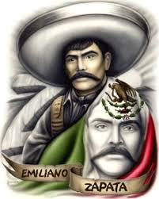

Emiliano Zapata
Mientras el gobernador de Morelos, representante de los intereses de los terratenientes, enviaba fuerzas contra él, Genovevo de la O se sublevó en Cuernavaca. En el curso de los dos años siguientes, otros campesinos se levantaron en armas, entre ellos Tepepa, Merino y el maderista Torres Burgos, con quienes se alió Zapata. En marzo de 1911 se adhirió al plan de San Luis Potosí proclamado por Francisco I. Madero y, a la muerte de Torres Burgos, fue designado «jefe supremo del movimiento revolucionario del Sur». Tras la caída de la dictadura de Porfirio Díaz, pronto aparecieron las discrepancias entre Zapata, quien reclamaba el inmediato reparto de las tierras de las haciendas entre los campesinos, y Madero, que por su parte exigía el desarme de las guerrillas. Por fin, Zapata aceptó el licenciamiento y desarme de sus tropas, con la esperanza de que la elección de Madero como presidente abriera las puertas a la reforma. Elegido éste en 1911, y ante el fracaso de nuevas conversaciones, Zapata elaboró en noviembre del mismo año el plan de Ayala, en el que declaraba a Madero incapaz de cumplir los objetivos de la revolución y anunciaba la expropiación de un tercio de las tierras de los terratenientes a cambio de una compensación, si se aceptaba, y por la fuerza en caso contrario. Los que se adhirieron al plan, que eligieron jefe de la revolución a Pascual Orozco, enarbolaron la bandera de la reforma agraria como prioridad y solicitaron la renuncia del presidente. Las fuerzas gubernamentales obligaron a Zapata a retirarse a Guerrero, pero el asesinato de Madero en febrero de 1913 por orden de Victoriano Huerta cambió la situación. Zapata rechazó la oferta de Huerta de unirse a sus fuerzas y apoyó a los constitucionalistas de Venustiano Carranza contra los huertistas. Nombrado jefe de la revolución en detrimento de Orozco, que había sido declarado traidor, consiguió derrotar a Huerta (1913).
En la convención de Aguascalientes de octubre de 1914 se concretó la alianza de Zapata y Pancho Villa, representantes del revolucionarismo agrario, contra Carranza, de tendencia moderada. Si bien ambos entraron poco después en la capital, su incapacidad política para dominar el aparato del Estado y las diferencias que surgieron entre los dos caudillos, a pesar de que Villa había aceptado el plan de Ayala, alentaron la reacción carrancista. Perseguido por Pablo González, Zapata se hizo fuerte en Morelos, mientras que Villa era derrotado en el norte. El aporte de algunos intelectuales como Díaz Soto y Gama y Pérez Taylor dio solidez ideológica al movimiento agrarista y ello permitió a los zapatistas organizar administrativamente el espacio que controlaban. En este sentido, el gobierno de Zapata creó comisiones agrarias, estableció la primera entidad de crédito agrario en México e intentó convertir la industria del azúcar de Morelos en una cooperativa. William Gates, enviado de Estados Unidos, destacó el orden de la zona controlada por Zapata frente al caos de la zona ocupada por los carrancistas. Sin embargo, la guerra proseguía; en 1917, las tropas de Carranza derrotaron de nuevo a Villa en el norte. Ante la amenaza que Zapata suponía para el gobierno federal, el coronel Jesús Guajardo, que dirigía las operaciones gubernamentales contra él, traicionó y asesinó al líder agrarista tras atraerlo a un encuentro secreto en la hacienda de Chinameca, en Morelos.